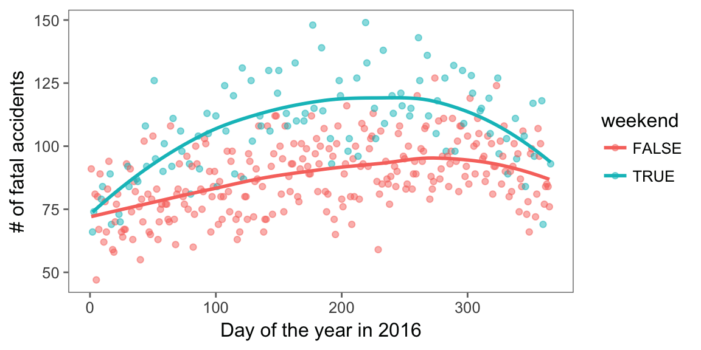

Chapter 2 Entering and cleaning data #1
Download a pdf of the lecture slides covering this topic.
2.1 Overview
There are four basic steps you will often repeat as you prepare to analyze data in R:
- Identify where the data is (If it’s on your computer, which directory? If it’s online, what’s the url?)
- Read data into R (
read.csv,read.table) using the file path you figured out in step 1 - Check to make sure the data came in correctly (
dim,head,tail,str) - Clean the data up
In this chapter, I’ll go basics for each of these steps, as well as dive a bit deeper into some related topics you should learn now to make your life easier as you get started using R for research.
2.2 Reading data into R
Data comes in files of all shapes and sizes. R has the capability to read data in from many of these, even proprietary files for other software (e.g., Excel and SAS files). As a small sample, here are some of the types of data files that R can read and work with:
- Flat files (much more about these in just a minute)
- Files from other statistical packages (SAS, Excel, Stata, SPSS)
- Tables on webpages (e.g., the table on ebola outbreaks near the end of this Wikipedia page)
- Data in a database (e.g., MySQL, Oracle)
- Data in JSON and XML formats
- Really crazy data formats used in other disciplines (e.g., netCDF files from climate research, MRI data stored in Analyze, NIfTI, and DICOM formats)
- Geographic shapefiles
- Data through APIs
Often, it is possible to read in and clean up even incredibly messy data, by using functions like scan and readLines to read the data in a line at a time, and then using regular expressions (which I’ll cover in the “Intermediate” section of the course) to clean up each line as it comes in. In over a decade of coding in R, I think the only time I’ve come across a data file I couldn’t get into R was for proprietary precision agriculture data collected at harvest by a combine.
2.2.1 Reading local flat files
Much of the data that you will want to read in will be in flat files. Basically, these are files that you can open using a text editor; the most common type you’ll work with are probably comma-separated files (often with a .csv or .txt file extension). Most flat files come in two general categories:
Fixed width files
Delimited files
- “.csv”: Comma-separated values
- “.tab”, “.tsv”: Tab-separated values
- Other possible delimiters: colon, semicolon, pipe (“|”)
Fixed width files are files where a column always has the same width, for all the rows in the column. These tend to look very neat and easy-to-read when you open them in a text editor. For example, the first few rows of a fixed-width file might look like this:
Course Number Day Time
Intro to Epi 501 M/W/F 9:00-9:50
Advanced Epi 521 T/Th 1:00-2:15Delimited files use some delimiter (for example, a column or a tab) to separate each column value within a row. The first few rows of a delimited file might look like this:
Course, Number, Day, Time
"Intro to Epi", 501, "M/W/F", "9:00-9:50"
"Advanced Epi", 521, "T/Th", "1:00-2:15"These flat files can have a number of different file extensions. The most generic is .txt, but they will also have ones more specific to their format, like .csv for a comma-delimited file or .fwf for a fixed with file.
R can read in data from both fixed with and delimited flat files. The only catch is that you need to tell R a bit more about the format of the flat file, including whether it is fixed width or delimited. If the file is fixed width, you will usually have to tell R the width of each column. If the file is delimited, you’ll need to tell R which delimiter is being used.
If the file is delimited, you can use the read.table family of functions to read it in. This family of functions includes several specialized functions. All members of the read.table family are doing the same basic thing. The only difference is what defaults each function has for the separator (sep) and the decimal point (dec). Members of the read.table family include:
| Function | Separator | Decimial point |
|---|---|---|
read.table |
comma | period |
read.csv |
comma | period |
read.csv2 |
semi-colon | comma |
read.delim |
tab | period |
read.delim2 |
tab | period |
You can use read.table to read in any delimited file, regardless of the separator and the value used for the decimal point. However, you will need to specify these values using the sep and dec parameters if they differ from the defaults for read.table (a space for the delimiter and period for the decimal). If you remember the more specialized function call, therefore, you can save yourself some typing. There are a few other default values besides sep and dec that differ between different functions in this family: header, for example, specifies whether the first row should be used as column names.
For example, to read in the Ebola data, which is comma-delimited, you could either use read.table with a sep argument specified or use read.csv, in which case you don’t have to specify sep:
# These two calls do the same thing
ebola <- read.table("data/country_timeseries.csv", sep = ",",
header = TRUE)
ebola <- read.csv("data/country_timeseries.csv")These functions have a number of different parameters to help you tell R how to read in data. For example, if the first few lines of the file aren’t part of the tabular data, you can tell R how many rows of the file to skip before it starts reading in the data. If the data uses an unusual value for missing data (e.g., -999), you can specify that, as well. Some of the interesting parameters with the read.table family of functions are:
| Option | Description |
|---|---|
sep |
What is the delimiter in the data? |
skip |
How many lines of the start of the file should you skip? |
header |
Does the first line you read give column names? |
as.is |
Should you bring in strings as characters, not factors? |
nrows |
How many rows do you want to read in? |
na.strings |
How are missing values coded? |
Remember that you can always find out more about a function by looking at its help file. For example, check out ?read.table and ?read.fwf. You can also use the help files to determine the default values of arguments for each function.
2.2.2 The read_* functions
The read.table family of functions are part of base R. There is a newer package called readr that has a family of read_* functions. These functions are very similar, but have some more sensible defaults. Compared to the read.table family of functions, the read_* functions:
- Work better with large datasets: faster, includes progress bar
- Have more sensible defaults (e.g., characters default to characters, not factors)
Functions in the read_* family include:
read_csv,read_tsv(specific delimiters)read_delim,read_table(generic)read_fwfread_logread_lines
These functions work very similarly to functions from the read.table family. For example, to read in the Daily Show guest data, you can call:
library(readr)
daily_show <- read_csv("data/daily_show_guests.csv", skip = 4)## Parsed with column specification:
## cols(
## YEAR = col_integer(),
## GoogleKnowlege_Occupation = col_character(),
## Show = col_character(),
## Group = col_character(),
## Raw_Guest_List = col_character()
## )The message that R prints after this call (“Parsed with column specification:..”) lets you know what classes R used for each column (this function tries to guess the appropriate function and, unlike the readr functions, will assign characters to a character rather than factor class – this is usually what you want).
The readr package is a member of the tidyverse of packages. The tidyverse describes an evolving collection of R packages with a common philosophy, and they are unquestionably changing the way people code in R. Most were developed in part or full by Hadley Wickham and others at RStudio. Many of these packages are only a few years old, but have been rapidly adapted by the R community. As a result, newer examples of R code will often look very different from the code in older R scripts, including examples in books that are more than a few years old. In this course, I’ll focus on “tidyverse” functions when possible, but I do put in details about base R equivalent functions or processes at some points – this will help you interpret older code. You can use the tidyverse package to download all tidyverse packages at one.
2.2.3 Reading online flat files
So far, I’ve only shown you how to read in data from files that are saved to your computer. R can also read in data directly from the web. If a flat file is posted online, you can read it into R in almost exactly the same way that you would read in a local file. The only difference is that you will use the file’s url instead of a local file path for the file argument.
With the read_* family of functions, you can do this both for flat files from a non-secure webpage (i.e., one that starts with http) and for files from a secure webpage (i.e., one that starts with https), including GitHub and Dropbox.
For example, to read in data from this GitHub repository of Ebola data, you can run:
url <- paste0("https://raw.githubusercontent.com/cmrivers/",
"ebola/master/country_timeseries.csv")
ebola <- read_csv(url)
ebola[1:3, 1:3]## # A tibble: 3 x 3
## Date Day Cases_Guinea
## <chr> <int> <int>
## 1 1/5/2015 289 2776
## 2 1/4/2015 288 2775
## 3 1/3/2015 287 27692.2.4 Saving and loading R objects
You can save an R object you’ve created as an .RData file.
To save an R object in a .RData file, use the save function:
save(ebola, file = "Ebola.RData")
list.files()## [1] "_book" "_bookdown.yml"
## [3] "_build.sh" "_deploy.sh"
## [5] "_output.yml" "01-course_info.Rmd"
## [7] "02-prelim.Rmd" "03-databasics.Rmd"
## [9] "book.bib" "data"
## [11] "DESCRIPTION" "Ebola.RData"
## [13] "figures" "homework.Rmd"
## [15] "index.Rmd" "LICENSE"
## [17] "packages.bib" "preamble.tex"
## [19] "README.md" "references.Rmd"
## [21] "RProgrammingForResearch.Rmd" "RProgrammingForResearch.Rproj"
## [23] "slides" "style.css"
## [25] "toc.css" "vocabulary.Rmd"Notice that, once you save the object, a new file named “Ebola.RData” is listed in the files in your current working directory. The default is for R to save the R object in your current working directory; to save it elsewhere, use a full relative or absolute pathname for the file argument.
Once you’ve saved an R object, you can re-load it later using the load function with the object’s file path. For example, since I’ve saved this R object, I can remove it from my current R workspace using the rm function, after which it will not show up when I run ls:
rm(ebola)
ls()## [1] "ld_genetics" "my_dir" "url"Then I can use the load command to re-load the object, after which it will again show up as an object in my R workspace:
load("Ebola.RData")
ls()## [1] "ebola" "ld_genetics" "my_dir" "url"There is one caveat for saving R objects: some people suggest you avoid this if possible, to make your research more reproducible (which is why we’re not covering it in the course slides). Imagine someone wants to look at your data and code in 30 years. R might not work the same way, so you might not be able to read an .RData file. Notice that, if you try to open an .RData file in a text edit, it won’t make any sense. However, you can open flat files (e.g., .csv, .txt) and R scripts (.R) in text editors – you should still be able to do this regardless of what happens to R. Some potential exceptions, when it might be useful to save an R object, include when:
- You have an object that you need to save that has a structure that won’t work well in a flat file (a list rather than a dataframe, for example); or
- Your starting dataset is very large, and it would take a long time for you to read in your data fresh every time. In this case it may make sense to do some data cleaning and then save the cleaned R object as a
.RDatafile, but be sure to also save the script you used to clean the raw data.
2.2.5 Reading other file types
Later in the course, we’ll talk about how to open a variety of other file types in R. However, you might find it immediately useful to be able to read in files from other statistical programs.
There are two “tidyverse” packages—readxl and haven—that help with this. They allow you to read in files from the following formats:
| File type | Function | Package |
|---|---|---|
| Excel | read_excel |
readxl |
| SAS | read_sas |
haven |
| SPSS | read_spss |
haven |
| Stata | `read_stata | haven |
2.3 Directories and pathnames
2.3.1 Directory structure
It seems a bit of a pain and a bit complex to have to think about computer directory structure in the “basics” part of this class, but this structure is not terribly complex once you get the idea of it. There are a couple of very good reasons why it’s worth learning now.
First, many of the most frustrating errors you get when you start using R trace back to understanding directories and filepaths. For example, when you try to read a file into R using only the filename, and that file is not in your current working directory, you will get an error like:
Error in file(file, "rt") : cannot open the connection
In addition: Warning message:
In file(file, "rt") : cannot open file 'Ex.csv': No such file or directoryThis error is especially frustrating when you’re new to R because it happens at the very beginning of your analysis – you can’t even get your data in. Also, if you don’t understand a bit about working directories and how R looks for the file you’re asking it to find, you’d have no idea where to start to fix this error.
Second, once you understand how to use pathnames, especially relative pathnames, to tell R how to find a file that is in a directory other than your working directory, you will be able to organize all of your files for a project in a much cleaner way. For example, you can create a directory for your project, then create one subdirectory to store all of your R scripts, and another to store all of your data, and so on. This can help you keep very complex projects more structured and easier to navigate. We’ll talk about these ideas more in the course sections on Reproducible Research, but it’s good to start learning how directory structures and filepaths work early.
Your computer organizes files through a collection of directories. Chances are, you are fairly used to working with these in your daily life already (although you may call them “folders” rather than “directories”). For example, you’ve probably created new directories to store data files and Word documents for a specific project.
Figure 2.1 illustrates the file directory structure on my computer. (Note that I have omitted many, many additional files and directories – this just shows an example of a few directories and files and how they are structured together). Directories are shown in blue, and files in green.

Figure 2.1: An example of file directory structure.
You can notice a few interesting things from Figure 2.1. First, you might notice the structure includes a few of the directories that you use a lot on your own computer, like Desktop, Documents, and Downloads. Next, the directory at the very top is the computer’s root directory, /. For a PC, the root directory might something like C:; for Unix and Macs, it’s usually /. Finally, if you look closely, you’ll notice that it’s possible to have different files in different locations of the directory structure with the same file name. For example, in the figure, there are files names heat_mort.csv in both the CourseText directory and in the example_data directory. These are two different files with different contents, but they can have the same name as long as they’re in different directories. This fact – that you can have files with the same name in different places – should help you appreciate how useful it is that R requires you to give very clear directions to describe exactly which file you want R to read in, if you aren’t reading in something in your current working directory.
You will have a home directory somewhere near the top of your structure, although it’s likely not your root directory. My home directory is /Users/brookeanderson. I’ll describe just a bit later how you can figure out what your own home directory is on your own computer.
2.3.2 Working directory
When you run R, it’s always running from within some working directory, which will be one of the directories somewhere in your computer’s directory structure. At any time, you can figure out which directory R is working in by running the command getwd() (short for “get working directory”). For example, my R session is currently running in the following directory:
getwd()## [1] "/Users/_gbanders/r_course/RProgrammingForResearch"This means that, for my current R session, R is working in the RProgrammingForResearch subdirectory of my brookeanderson directory (which is my home directory).
There are a few general rules for which working directory R will start in when you open an R session. These are not absolute rules, but they’re generally true. If you have R closed, and you open it by double-clicking on an R script, then R will generally open with, as its working directory, the directory in which that script is stored. This is often a very convenient convention, because often any of the data you’ll be reading in for that script is somewhere near where the script file is saved in the directory structure.
If you open R by double-clicking on the R icon in “Applications” (or something similar on a PC), R will start in its default working directory. You can find out what this is, or change it, in RStudio’s “Preferences”. I have never had a compelling reason to change this on my own computer, as I find it very easy to just move around the directories and set a new working directory using pathnames and the setwd() function.
Finally, later in the course, we’ll talk about using R Projects from within RStudio. If you open an R Project, R will start in that project’s working directory (the directory in which the .Rproj file for the project is stored).
2.3.3 File and directory pathnames
Once you get a picture of how your directories and files are organized, you can use pathnames, either absolute or relative, to move around the directories, set a different working directory, and read in files from different directories than your current working directory. Pathnames are the directions for getting to a directory or file stored on your computer.
When you want to reference a directory or file, you can use one of two types of pathnames:
- Relative pathname: How to get to the file or directory from your current working directory
- Absolute pathname: How to get to the file or directory from anywhere on the computer
Absolute pathnames are a bit more straightforward conceptually, because they don’t depend on your current working directory. However, they’re also a lot longer to write, and they’re much less convenient if you’ll be sharing some of your code with other people who might run it on their own computers. I’ll explain this second point a bit more later in this section.
Absolute pathnames give the full directions to a directory or file, starting all the way at the root directory. For example, the heat_mort.csv file in the CourseText directory has the absolute pathname:
"/Users/brookeanderson/Desktop/RCourseFall2015/CourseText/heat_mort.csv"You can use this absolute pathname to read this file in using read.csv. This absolute pathname will always work, regardless of your current working directory, because it gives directions from the root – it will always be clear to R exactly what file you’re talking about. Here’s the code to use to read that file in using the read.csv function with the file’s absolute pathname:
heat_mort <- read.csv("/Users/brookeanderson/Desktop/RCourseFall2015/CourseText/heat_mort.csv")The relative pathname, on the other hand, gives R the directions for how to get to a directory or file from the current working directory. If the file or directory you’re looking for is pretty close to your current working directory in your directory structure, then a relative pathname can be a much shorter way to tell R how to get to the file than an absolute pathname. However, the relative pathname depends on your current working directory – the relative pathname that works perfectly when you’re working in one directory will not work at all once you move into a different working directory.
As an example of a relative pathname, say you’re working in the directory RCourseFall2015 within the file structure shown in Figure 2.1, and you want to read in the heat_mort.csv file in the CourseText directory. To get from RCourseFall2015 to that file, you’d need to look in the subdirectory CourseText, where you could find heat_mort.csv. Therefore, the relative pathname from your working directory would be:
"CourseText/heat_mort.csv"You can use this relative pathname to tell R where to find and read in the file:
heat_mort <- read.csv("CourseText/heat_mort.csv")While this pathname is much shorter than the absolute pathname, it is important to remember that if you changed your working directory (for example, if you used setwd("CourseText") to move into the CourseText directory), this relative pathname would no longer work.
There are a few abbreviations that can be really useful for pathnames:
| Shorthand | Meaning |
|---|---|
~ |
Home directory |
. |
Current working directory |
.. |
One directory up from current working directory |
../.. |
Two directories up from current working directory |
These can help you keep pathnames shorter and also help you move “up-and-over” to get to a file or directory that’s not on the direct path below your current working directory.
For example, my home directory is /Users/brookeanderson. If I wanted to change my working directory to the Downloads directory, which is a direct sub-directory of my home directory, I could use:
setwd("~/Downloads")As a second example, say I was working in the working directory CourseText, but I wanted to read in the heat_mort.csv file that’s in the example_data directory, rather than the one in the CourseText directory. I can use the .. abbreviation to tell R to look up one directory from the current working directory, and then down within a subdirectory of that. The relative pathname in this case is:
"../Week2_Aug31/example_data/heat_mort.csv"This tells R to look one directory up from the working directory (..), which in this case is to RCourseFall2015, and then down within that directory to Week2_Aug31, then to example_data, and then to look there for the file heat_mort.csv.
The relative pathname to read this file while R is working in the CourseTest directory would be:
heat_mort <- read.csv("../Week2_Aug31/example_data/heat_mort.csv")These relative pathnames would “break” as soon as you tried them from a different working directory – this fact might make it seem like you would never want to use relative pathnames, and would always want to use absolute ones instead, even if they’re longer. If that were the only consideration (length of the pathname), then perhaps that would be true. However, as you do more and more in R, there will likely be many occasions when you want to use relative pathnames instead. They are particularly useful if you ever want to share a whole directory, with R scripts and data, with a collaborator. In that case, if you’ve used relative pathnames, all the code should work fine for the person you share with, even though they’re running it on their own computer. Conversely, if you’d used absolute pathnames, none of them would work on another computer, because the “top” of the directory structure (i.e., for me, /Users/brookeanderson/Desktop) will almost definitely be different for your collaborator’s computer than it is for yours.
You can use absolute or relative pathnames for a number of things:
- To set your working directory:
setwd("../Week2_Aug31"), for example - To read in files from a different directory (as shown in the previous examples)
- To list files in a different directory: for example,
list.files("..")will list all files in the directory directly about your current working directory (the parent directory of your working directory)
If you’re getting errors reading in files, and you think it’s related to the relative pathname you’re using, it’s often helpful to use list.files() to make sure the file you’re trying to load is in the directory that the relative pathname you’re using is directing R to.
2.4 Diversion: paste
This is a good opportunity to explain how to use some functions that can be very helpful when you’re using relative or absolute pathnames: paste() and paste0().
As a bit of important background information, it’s important that you understand that you can save a pathname (absolute or relative) as an R object, and then use that R object in calls to later functions like list.files() and read.csv(). For example, to use the absolute pathname to read the heat_mort.csv file in the CourseText directory, you could run:
my_file <- "/Users/brookeanderson/Desktop/RCourseFall2015/CourseText/heat_mort.csv"
heat_mort <- read.csv(my_file)You’ll notice from this code that the pathname to get to a directory or file can sometimes become ungainly and long. To keep your code cleaner, you can address this by using the paste or paste0 functions. These functions come in handy in a lot of other applications, too, but this is a good place to introduce them.
The paste() function is very straightforward. It takes, as inputs, a series of different character strings you want to join together, and it pastes them together in a single character string. (As a note, this means that your result vector will only be one element long, for basic uses of paste(), while the inputs will be several different character stings.) You separate all the different things you want to paste together using with commas in the function call. For example:
paste("Sunday", "Monday", "Tuesday")## [1] "Sunday Monday Tuesday"length(c("Sunday", "Monday", "Tuesday"))## [1] 3length(paste("Sunday", "Monday", "Tuesday"))## [1] 1The paste() function has an option called sep =. This tells R what you want to use to separate the values you’re pasting together in the output. The default is for R to use a space, as shown in the example above. To change the separator, you can change this option, and you can put in just about anything you want. For example, if you wanted to paste all the values together without spaces, you could use sep = "":
paste("Sunday", "Monday", "Tuesday", sep = "")## [1] "SundayMondayTuesday"As a shortcut, instead of using the sep = "" option, you could achieve the same thing using the paste0 function. This function is almost exactly like paste, but it defaults to "" (i.e., no space) as the separator between values by default:
paste0("Sunday", "Monday", "Tuesday")## [1] "SundayMondayTuesday"With pathnames, you will usually not want spaces. Therefore, you could think about using paste0() to write an object with the pathname you want to ultimately use in commands like list.files() and setwd(). This will allow you to keep your code cleaner, since you can now divide long pathnames over multiple lines:
my_file <- paste0("/Users/brookeanderson/Desktop/",
"RCourseFall2015/CourseText/heat_mort.csv")
heat_mort <- read.csv(my_file)You will end up using paste() and paste0() for many other applications, but this is a good example of how you can start using these functions to start to get a feel for them.
2.5 Data cleaning
Once you have loaded data into R, you’ll likely need to clean it up a little before you’re ready to analyze it. Here, I’ll go over the first steps of how to do that with functions from dplyr, another package in the tidyverse. Here are some of the most common data-cleaning tasks, along with the corresponding dplyr function for each:
| Task | dplyr function |
|---|---|
| Renaming columns | rename |
| Filtering to certain rows | filter |
| Selecting certain columns | select |
| Adding or changing columns | mutate |
In this section, I’ll describe how to do each of these four tasks; in later sections of the course, we’ll go much deeper into how to clean messier data.
For the examples in this section, I’ll use example data listing guests to the Daily Show. To follow along with these examples, you’ll want to load that data, as well as load the dplyr package (install it using install.packages if you have not already):
library(dplyr)
daily_show <- read_csv("data/daily_show_guests.csv", skip = 4)I’ve used this data in previous examples, but as a reminder, here’s what it looks like:
head(daily_show)## # A tibble: 6 x 5
## YEAR GoogleKnowlege_Occupation Show Group Raw_Guest_List
## <int> <chr> <chr> <chr> <chr>
## 1 1999 actor 1/11/99 Acting Michael J. Fox
## 2 1999 Comedian 1/12/99 Comedy Sandra Bernhard
## 3 1999 television actress 1/13/99 Acting Tracey Ullman
## 4 1999 film actress 1/14/99 Acting Gillian Anderson
## 5 1999 actor 1/18/99 Acting David Alan Grier
## 6 1999 actor 1/19/99 Acting William Baldwin2.5.1 Renaming columns
A first step is often re-naming the columns of the dataframe. It can be hard to work with a column name that:
- is long
- includes spaces
- includes upper case
You can check out the column names for a dataframe using the colnames function, with the dataframe object as the argument. Several of the column names in daily_show have some of these issues:
colnames(daily_show)## [1] "YEAR" "GoogleKnowlege_Occupation"
## [3] "Show" "Group"
## [5] "Raw_Guest_List"To rename these columns, use rename. The basic syntax is:
## Generic code
rename(dataframe,
new_column_name_1 = old_column_name_1,
new_column_name_2 = old_column_name_2)The first argument is the dataframe for which you’d like to rename columns. Then you list each pair of new versus old column names (in that order) for each of the columns you want to rename. To rename columns in the daily_show data using rename, for example, you would run:
daily_show <- rename(daily_show,
year = YEAR,
job = GoogleKnowlege_Occupation,
date = Show,
category = Group,
guest_name = Raw_Guest_List)
head(daily_show, 3)## # A tibble: 3 x 5
## year job date category guest_name
## <int> <chr> <chr> <chr> <chr>
## 1 1999 actor 1/11/99 Acting Michael J. Fox
## 2 1999 Comedian 1/12/99 Comedy Sandra Bernhard
## 3 1999 television actress 1/13/99 Acting Tracey Ullman
Many of the functions in tidyverse packages, including those in dplyr, provide exceptions to the general rule about when to use quotation marks versus when to leave them off. Unfortunately, this may make it a bit hard to learn when to use quotation marks versus when not to. One way to think about this, which is a bit of an oversimplification but can help as you’re learning, is to assume that anytime you’re using a dplyr function, every column in the dataframe you’re working with has been loaded to your R session as its own object.
2.5.2 Selecting columns
Next, you may want to select only some columns of the dataframe. You can use the select function from dplyr to subset the dataframe to certain columns. The basic structure of this command is:
## Generic code
select(dataframe, column_name_1, column_name_2, ...)In this call, you first specify the dataframe to use and then list all of the column names to include in the output dataframe, with commas between each column name. For example, to select all columns in daily_show except year (since that information is already included in date), run:
select(daily_show, job, date, category, guest_name)## # A tibble: 2,693 x 4
## job date category guest_name
## <chr> <chr> <chr> <chr>
## 1 actor 1/11/99 Acting Michael J. Fox
## 2 Comedian 1/12/99 Comedy Sandra Bernhard
## 3 television actress 1/13/99 Acting Tracey Ullman
## 4 film actress 1/14/99 Acting Gillian Anderson
## 5 actor 1/18/99 Acting David Alan Grier
## 6 actor 1/19/99 Acting William Baldwin
## 7 Singer-lyricist 1/20/99 Musician Michael Stipe
## 8 model 1/21/99 Media Carmen Electra
## 9 actor 1/25/99 Acting Matthew Lillard
## 10 stand-up comedian 1/26/99 Comedy David Cross
## # ... with 2,683 more rows
Don’t forget that, if you want to change column names in the saved object, you must reassign the object to be the output of rename. If you run one of these cleaning functions without reassigning the object, R will print out the result, but the object itself won’t change. You can take advantage of this, as I’ve done in this example, to look at the result of applying a function to a dataframe without changing the original dataframe. This can be helpful as you’re figuring out how to write your code.
The select function also provides some time-saving tools. For example, in the last example, we wanted all the columns except one. Instead of writing out all the columns we want, we can use - with the columns we don’t want to save time:
daily_show <- select(daily_show, -year)
head(daily_show, 3)## # A tibble: 3 x 4
## job date category guest_name
## <chr> <chr> <chr> <chr>
## 1 actor 1/11/99 Acting Michael J. Fox
## 2 Comedian 1/12/99 Comedy Sandra Bernhard
## 3 television actress 1/13/99 Acting Tracey Ullman2.5.3 Filtering to certain rows
Next, you might want to filter the dataset down so that it only includes certain rows. For example, you might want to get a dataset with only the guests from 2015, or only guests who are scientists.
You can use the filter function from dplyr to filter a dataframe down to a subset of rows. The syntax is:
## Generic code
filter(dataframe, logical statement)The logical statement in this call gives the condition that a row must meet to be included in the output data frame. For example, if you want to create a data frame that only includes guests who were scientists, you can run:
scientists <- filter(daily_show, category == "Science")
head(scientists)## # A tibble: 6 x 4
## job date category guest_name
## <chr> <chr> <chr> <chr>
## 1 neurosurgeon 4/28/03 Science Dr Sanjay Gupta
## 2 scientist 1/13/04 Science Catherine Weitz
## 3 physician 6/15/04 Science Hassan Ibrahim
## 4 doctor 9/6/05 Science Dr. Marc Siegel
## 5 astronaut 2/13/06 Science Astronaut Mike Mullane
## 6 Astrophysicist 1/30/07 Science Neil deGrasse TysonTo build a logical statement to use in filter, you’ll need to know some of R’s logical operators. Some of the most commonly used ones are:
| Operator | Meaning | Example |
|---|---|---|
== |
equals | category == "Acting" |
!= |
does not equal | category != "Comedy |
%in% |
is in | category %in% c("Academic", "Science") |
is.na() |
is NA | is.na(job) |
!is.na() |
is not NA | !is.na(job) |
& |
and | year == 2015 & category == "Academic" |
| |
or | year == 2015 | category == "Academic" |
We’ll use these logical operators a lot more as the course continues, so they’re worth learning by heart.
Two common errors with logical operators are: (1) Using = instead of == to check if two values are equal; and (2) Using == NA instead of is.na to check for missing observations.
2.5.4 Add or change columns
You can change a column or add a new column using the mutate function from the dplyr package. That function has the syntax:
# Generic code
mutate(dataframe,
changed_column = function(changed_column),
new_column = function(other arguments))For example, the job column in daily_show sometimes uses upper case and sometimes does not (this call uses the unique function to list only unique values in this column):
head(unique(daily_show$job), 10)## [1] "actor" "Comedian" "television actress"
## [4] "film actress" "Singer-lyricist" "model"
## [7] "stand-up comedian" "actress" "comedian"
## [10] "Singer-songwriter"To make all the observations in the job column lowercase, use the tolower function within a mutate function:
mutate(daily_show, job = tolower(job))## # A tibble: 2,693 x 4
## job date category guest_name
## <chr> <chr> <chr> <chr>
## 1 actor 1/11/99 Acting Michael J. Fox
## 2 comedian 1/12/99 Comedy Sandra Bernhard
## 3 television actress 1/13/99 Acting Tracey Ullman
## 4 film actress 1/14/99 Acting Gillian Anderson
## 5 actor 1/18/99 Acting David Alan Grier
## 6 actor 1/19/99 Acting William Baldwin
## 7 singer-lyricist 1/20/99 Musician Michael Stipe
## 8 model 1/21/99 Media Carmen Electra
## 9 actor 1/25/99 Acting Matthew Lillard
## 10 stand-up comedian 1/26/99 Comedy David Cross
## # ... with 2,683 more rows2.5.5 Piping
So far, I’ve shown how to use these dplyr functions one at a time to clean up the data, reassigning the dataframe object at each step. However, there’s a trick called “piping” that will let you clean up your code a bit when you’re writing a script to clean data.
If you look at the format of these dplyr functions, you’ll notice that they all take a dataframe as their first argument:
# Generic code
rename(dataframe,
new_column_name_1 = old_column_name_1,
new_column_name_2 = old_column_name_2)
select(dataframe, column_name_1, column_name_2)
filter(dataframe, logical statement)
mutate(dataframe,
changed_column = function(changed_column),
new_column = function(other arguments))Without piping, you have to reassign the dataframe object at each step of this cleaning if you want the changes saved in the object:
daily_show <-read_csv("data/daily_show_guests.csv",
skip = 4)
daily_show <- rename(daily_show,
job = GoogleKnowlege_Occupation,
date = Show,
category = Group,
guest_name = Raw_Guest_List)
daily_show <- select(daily_show, -YEAR)
daily_show <- mutate(daily_show, job = tolower(job))
daily_show <- filter(daily_show, category == "Science")Piping lets you clean this code up a bit. It can be used with any function that inputs a dataframe as its first argument. It pipes the dataframe created right before the pipe (%>%) into the function right after the pipe. With piping, therefore, the same data cleaning looks like:
daily_show <-read_csv("data/daily_show_guests.csv",
skip = 4) %>%
rename(job = GoogleKnowlege_Occupation,
date = Show,
category = Group,
guest_name = Raw_Guest_List) %>%
select(-YEAR) %>%
mutate(job = tolower(job)) %>%
filter(category == "Science")Notice that, when piping, the first argument (the name of the dataframe) is excluded from all function calls that follow a pipe. This is because piping sends the dataframe from the last step into each of these functions as the dataframe argument.
2.5.6 Base R equivalents to dplyr functions
Just so you know, all of these dplyr functions have alternatives, either functions or processes, in base R:
dplyr |
Base R equivalent |
|---|---|
rename |
Reassign colnames |
select |
Square bracket indexing |
filter |
subset |
mutate |
Use $ to change / create columns |
You will see these alternatives used in older code examples.
2.6 Dates in R
As part of the data cleaning process, you may want to change the class of some of the columns in the dataframe. For example, you may want to change a column from a character to a date.
Here are some of the most common vector classes in R:
| Class | Example |
|---|---|
character |
“Chemistry”, “Physics”, “Mathematics” |
numeric |
10, 20, 30, 40 |
factor |
Male [underlying number: 1], Female [2] |
Date |
“2010-01-01” [underlying number: 14,610] |
logical |
TRUE, FALSE |
To find out the class of a vector (including a column in a dataframe – remember each column can be thought of as a vector), you can use class():
class(daily_show$date)## [1] "character"It is especially common to need to convert dates during the data cleaning process, since date columns will usually be read into R as characters or factors – you can do some interesting things with vectors that are in a Date class that you cannot do with a vector in a character class. To convert a vector to the Date class, you can use the as.Date function. For example, to convert the date column in the daily_show data into a Date class, you can run:
daily_show <- mutate(daily_show,
date = as.Date(date, format = "%m/%d/%y"))
head(daily_show, 3)## # A tibble: 3 x 4
## job date category guest_name
## <chr> <date> <chr> <chr>
## 1 neurosurgeon 2003-04-28 Science Dr Sanjay Gupta
## 2 scientist 2004-01-13 Science Catherine Weitz
## 3 physician 2004-06-15 Science Hassan Ibrahimclass(daily_show$date)## [1] "Date"Once you have an object in the Date class, you can do things like plot by date, calculate the range of dates, and calculate the total number of days the dataset covers:
range(daily_show$date)
diff(range(daily_show$date))You can convert dates expressed in a number of different ways into a Date class in R, as long as you can explain to R how to parse the format that the date is in before you convert it. The only tricky thing in converting objects into a Date class is learning the abbreviations for the format option of the as.Date function. Here are some common ones:
| Abbreviation | Meaning |
|---|---|
%m |
Month as a number (e.g., 1, 05) |
%B |
Full month name (e.g., August) |
%b |
Abbreviated month name (e.g., Aug) |
%y |
Two-digit year (e.g., 99) |
%Y |
Four-digit year (e.g., 1999) |
%A |
Full weekday (e.g., Monday) |
%a |
Abberviated weekday (e.g., Mon) |
Here are some examples of what you would specify for the format argument of as.Date for some different original formats of date columns:
| Your date | format |
|---|---|
| 10/23/2008 | “%m/%d%Y” |
| 08-10-23 | “%y-%m-%d” |
| Oct. 23 2008 | “%b. %d %Y” |
| October 23, 2008 | “%B %d, %Y” |
| Thurs, 23 October 2008 | “%a, %d %B %Y” |
You must use the format argument to specify what your date column looks like before it’s converted to a Date class, not how you’d like it to look after its converted. Once an objects is in a date class, it will always be printed out using a common format, unless you change it back into a character class. (Confusingly, there is a format function that you can use to convert from a Date class to a character class and, in that case, the format argument does specify how the final date will look. This is mainly useful as a last step in data analysis, when you’re creating plot labels of table columns, for example.)
There is also a function in the tidyverse, called lubridate, that helps in parsing dates. In many cases you can use functions from this package to parse dates much more easily, without having to specify specific starting formats.
The ymd function from lubridate can be used to parse a column into a Date class, regardless of the original format of the date, as long as the date elements are in the order: year, month, day. For example:
library(lubridate)## Warning: package 'lubridate' was built under R version 3.4.4ymd("2008-10-13")## [1] "2008-10-13"ymd("'08 Oct 13")## [1] "2008-10-13"ymd("'08 Oct 13")## [1] "2008-10-13"The lubridate package has similar functions for other date orders or for date-times, including:
dmymdyymd_hymd_hm
We could have used these to transform the date in daily_show, using the following pipe chain:
daily_show <- read_csv("data/daily_show_guests.csv",
skip = 4) %>%
rename(job = GoogleKnowlege_Occupation,
date = Show,
category = Group,
guest_name = Raw_Guest_List) %>%
select(-YEAR) %>%
mutate(date = mdy(date)) %>%
filter(category == "Science")
head(daily_show, 2)## # A tibble: 2 x 4
## job date category guest_name
## <chr> <date> <chr> <chr>
## 1 neurosurgeon 2003-04-28 Science Dr Sanjay Gupta
## 2 scientist 2004-01-13 Science Catherine WeitzThe lubridate package also includes functions to pull out certain elements of a date, including:
wdaymdayydaymonthquarteryear
For example, we could use wday to create a new column with the weekday of each show:
mutate(daily_show,
show_day = wday(date, label = TRUE)) %>%
select(date, show_day, guest_name) %>%
slice(1:5)## # A tibble: 5 x 3
## date show_day guest_name
## <date> <ord> <chr>
## 1 2003-04-28 Mon Dr Sanjay Gupta
## 2 2004-01-13 Tue Catherine Weitz
## 3 2004-06-15 Tue Hassan Ibrahim
## 4 2005-09-06 Tue Dr. Marc Siegel
## 5 2006-02-13 Mon Astronaut Mike Mullane2.7 In-course Exercise
2.7.1 Downloading and checking out the example data
Download the whole directory for this week from Github (https://github.com/geanders/week_2_data). To do that, go the the GitHub page with data for this week’s exercise and, in the top right, choose “Clone or Download” and then choose “Download ZIP”. This will download a compressed file with the full directory of data, probably to your computer’s “Downloads” folder. Then move the directory into your course Project directory and “unzip” it (try double-clicking the file, or right click on the file and see if there’s a “decompress” or “unzip” option). All the files will be in a subdirectory—move them into the main Project directory (don’t do this in R, just use whatever technique you usually use on your computer to move files between directories).
- Look through the structure of the “data” directory. What files are in the directory? Which files are flat files? Which are delimited (one category of flat files), and what are their delimiters?
- Create a new R script to put all the code you use for this exercise. Create a subdirectory in your course directory called “R” and save this script there using a
.Rextension (e.g., “week_2.R”).
2.7.2 Reading in different types of files
Now you’ll try reading in data from a variety of types of file formats.
Try the following tasks:
- What type of flat file do you think the “ld_genetics.txt” file is? See if you can read it in and save it as the R object
ld_genetics. Use thesummaryfunction to check out basic statistics on the data. - Check out the file “measles_data/02-09-2015.txt”. What type of flat file do you think it is? Since it’s in a subdirectory, you’ll need to tell R how to get to it from the project directory, using something called a relative pathname (we’ll talk about this a lot more in the next section of the lecture). Read this file into R as an object named
ca_measles, using the relative pathname (“measles_data/02-09-2015.txt”) in place of the file name in theread_csvfunction call. Use thecol_namesoption to name the columns “city” and “count”. What would the default column names be if you didn’t use this option (try this out by runningread_csvwithout thecol_namesoption)? - Read in the Excel file “icd-10.xls” and assign it to the object name
idc10. Use thereadxlpackage to do that (examples are at the bottom of the linked page). - Read in the SAS file
icu.sas7bdat. To do this, use thehavenpackage. Read the file into the R objecticu.
Example R code:
# Load the `readr` package
library(readr)
# Use `read_tsv` to read this file.
ld_genetics <- read_tsv("ld_genetics.txt")
summary(ld_genetics)
# Use `read_tsv` to read this file. Because the first line
# of the file is *not* the column names, you need to specify what the column
# names should be with the `col_names` parameter.
ca_measles <- read_tsv("measles_data/02-09-2015.txt",
col_names = c("city", "count"))
head(ca_measles)
# You'll need the `readxl` package to read in this file. Load that.
library(readxl)
# Use the `read_excel` function to read in the file.
icd10 <- read_excel("icd-10.xls")
head(icd10)
# You'll need the `haven` function to read in this file. Load that.
library(haven)
# Use the `read_sas` function to read in this file.
icu <- read_sas("icu.sas7bdat")
icu[1:5, 1:5]2.7.3 Directory structure
Once you have the data, I’d like you to try using setwd() to move around the directories on your computer. For this section of the exercise, you’ll also try to open the same file from different working directories, to get practice using absolute and relative file pathnames.
Start by changing your working directory to the “data” subdirectory you just downloaded. For me, the absolute path to that is /Users/brookeanderson/RProgrammingForResearch/data, so to change my working directory to this one using an absolute file pathname, I would run:
setwd("/Users/brookeanderson/RProgrammingForResearch/data")
getwd()The absolute pathname will be different for each person, based on the directories on his or her computer and where he or she saved this particular directory.
Since “~” is shorthand for my home directory (“/Users/brookeanderson”), I could also use the absolute pathname “~/RProgrammingForResearch/data” when setting this directory as my working directory.
Now, use the list.files function to make sure you have all the files that you just pulled in your current working directory:
list.files()## [1] "accident.csv"
## [2] "App-1"
## [3] "App-2"
## [4] "AWOIS_Wrecks_KnownYear.tab"
## [5] "AWOIS_Wrecks.csv"
## [6] "country_timeseries.csv"
## [7] "daily_show_guests.csv"
## [8] "deaths-weather.csv"
## [9] "DRUG_CLASS_I_Mean_Cmax_Trough_Efficacy_R_DATA_ANALYSIS.xlsx"
## [10] "example_choropleth.Rdata"
## [11] "fars_colorado.RData"
## [12] "icd-10.xls"
## [13] "ICU_Data_Code_Sheet.pdf"
## [14] "icu.sas7bdat"
## [15] "ld_genetics.txt"
## [16] "measles_data"
## [17] "mexico_deaths.csv"
## [18] "mexico_exposure.csv"
## [19] "R_data_analysis_class_project__second_data_set"
## [20] "serial_map_data.csv"
## [21] "serial_phone_data.csv"
## [22] "The_templates"
## [23] "titanic.csv"Try the following tasks:
- Read in the ebola data in
country_timeseries.csv. Assign it to an R object namedebola. How many rows and columns does it have? What are the names of the columns? - Now try moving up one directory from your current working directory (which should be the “data” directory), into the directory you created for this course. What happens if you use the same code as before to read in the file? What do you need to change to be able to read the file in from here? Try to read in the data from here using:
- A relative pathname
- An absolute pathname
- Now move your working directory to be the subdirectory of “data” called “measles_data”. Try to read in the Ebola data from this working directory using:
- A relative pathname
- An absolute pathname
- Which method (absolute or relative pathnames) always used the same code, regardless of your current working directory? Which method used different code, depending on the starting working directory?
Example R code:
getwd() ## Make sure you're in the "data" directory to start## [1] "/Users/brookeanderson/RProgrammingForResearch/data"ebola <- read.csv("country_timeseries.csv", header = TRUE)ebola[1:5, 1:5]## Date Day Cases_Guinea Cases_Liberia Cases_SierraLeone
## 1 1/5/2015 289 2776 NA 10030
## 2 1/4/2015 288 2775 NA 9780
## 3 1/3/2015 287 2769 8166 9722
## 4 1/2/2015 286 NA 8157 NA
## 5 12/31/2014 284 2730 8115 9633dim(ebola) # To figure out number of rows and columns## [1] 122 18colnames(ebola) # To figure out column names## [1] "Date" "Day" "Cases_Guinea"
## [4] "Cases_Liberia" "Cases_SierraLeone" "Cases_Nigeria"
## [7] "Cases_Senegal" "Cases_UnitedStates" "Cases_Spain"
## [10] "Cases_Mali" "Deaths_Guinea" "Deaths_Liberia"
## [13] "Deaths_SierraLeone" "Deaths_Nigeria" "Deaths_Senegal"
## [16] "Deaths_UnitedStates" "Deaths_Spain" "Deaths_Mali"## Move up one directory
setwd("..")
getwd()
## Get the file using the relative pathname
ebola <- read.csv("data/country_timeseries.csv", header = TRUE) ebola[1:5, 1:5]## Date Day Cases_Guinea Cases_Liberia Cases_SierraLeone
## 1 1/5/2015 289 2776 NA 10030
## 2 1/4/2015 288 2775 NA 9780
## 3 1/3/2015 287 2769 8166 9722
## 4 1/2/2015 286 NA 8157 NA
## 5 12/31/2014 284 2730 8115 9633## Get the file using the absolute pathname
abs_path <- paste0("/Users/brookeanderson/RProgrammingForResearch/",
"data/country_timeseries.csv")
abs_path## [1] "/Users/brookeanderson/RProgrammingForResearch/data/country_timeseries.csv"ebola <- read.csv(abs_path, header = TRUE) ebola[1:5, 1:5]## Date Day Cases_Guinea Cases_Liberia Cases_SierraLeone
## 1 1/5/2015 289 2776 NA 10030
## 2 1/4/2015 288 2775 NA 9780
## 3 1/3/2015 287 2769 8166 9722
## 4 1/2/2015 286 NA 8157 NA
## 5 12/31/2014 284 2730 8115 9633## Reset your working directory as your directory for this course
## and then check that you're in the right place
getwd()## [1] "/Users/brookeanderson/RProgrammingForResearch"## Move into the measles_data subdirectory
setwd("data/measles_data")
getwd()## [1] "/Users/brookeanderson/RProgrammingForResearch/data/measles_data"## Get the file using the relative pathname
ebola <- read.csv("../country_timeseries.csv", header = TRUE) ebola[1:5, 1:5]## Date Day Cases_Guinea Cases_Liberia Cases_SierraLeone
## 1 1/5/2015 289 2776 NA 10030
## 2 1/4/2015 288 2775 NA 9780
## 3 1/3/2015 287 2769 8166 9722
## 4 1/2/2015 286 NA 8157 NA
## 5 12/31/2014 284 2730 8115 9633# Get the file using the absolute pathname (note: we've already assigned
# the absolute pathname in the `abs_path` object, so we can just use that
# object in the `read.csv` call here, rather than typing out the full
# absolute pathname again.)
ebola <- read.csv(abs_path, header = TRUE) ebola[1:5, 1:5]## Date Day Cases_Guinea Cases_Liberia Cases_SierraLeone
## 1 1/5/2015 289 2776 NA 10030
## 2 1/4/2015 288 2775 NA 9780
## 3 1/3/2015 287 2769 8166 9722
## 4 1/2/2015 286 NA 8157 NA
## 5 12/31/2014 284 2730 8115 9633If you have extra time:
- Find out some more about this Ebola dataset by checking out Caitlin Rivers’ Ebola data GitHub repository. Who is Caitlin Rivers? How did she put this dataset together?
- Search for R code related to Ebola research on GitHub. Go to the GitHub home page and use the search bar to search for “ebola”. On the results page, scroll down and use the “Language” sidebar on the left to choose repositories with R code. Did you find any interesting projects?
- When you
list.files()when your working directory is the “data” directory, almost everything listed has a file extension, like.csv,.xls,.sas7bdat. One thing does not. Which one? Why does this listing not have a file extension?
2.7.4 Cleaning up data #1
Try out the following tasks:
- Copy the following code into an R script. Figure out what each line does, and add comments to each line of code describing what the code is doing.
# Copy this code to an R script and add comments describing what each line is doing
library(haven)
icu <- read_sas("data/icu.sas7bdat")
icu <- select(icu, ID, AGE, GENDER)
icu <- rename(icu,
id = ID,
age = AGE,
gender = GENDER)
icu <- mutate(icu,
gender = factor(gender, levels = c(0, 1), labels = c("Male", "Female")),
id = as.character(id))
icu- Following previous parts of the in-course exercise, you have an R object called
ebola(if you need to, use some code from earlier in this in-course exercise to read in the data and create that object). Create an object calledebola_liberiathat only has the columns with the date and the number of cases and deaths in Liberia. How many columns does this new dataframe have? How many observations? - Change the column names to
date,cases, anddeaths. - Add a column called
ratiothat has the ratio of deaths to cases for each observation (i.e., death counts divided by case counts).
Example R code:
# Load the dplyr package
library(dplyr)
## Create a subset with just the Liberia columns and Date
ebola_liberia <- select(ebola, Date, Cases_Liberia, Deaths_Liberia)
head(ebola_liberia)## Date Cases_Liberia Deaths_Liberia
## 1 1/5/2015 NA NA
## 2 1/4/2015 NA NA
## 3 1/3/2015 8166 3496
## 4 1/2/2015 8157 3496
## 5 12/31/2014 8115 3471
## 6 12/28/2014 8018 3423## How many colums and rows does the whole dataset have (could also use `dim`)?
ncol(ebola_liberia)## [1] 3nrow(ebola_liberia)## [1] 122## Rename the columns
ebola_liberia <- rename(ebola_liberia,
date = Date,
cases = Cases_Liberia,
deaths = Deaths_Liberia)
head(ebola_liberia)## date cases deaths
## 1 1/5/2015 NA NA
## 2 1/4/2015 NA NA
## 3 1/3/2015 8166 3496
## 4 1/2/2015 8157 3496
## 5 12/31/2014 8115 3471
## 6 12/28/2014 8018 3423## Add a `ratio` column
ebola_liberia <- mutate(ebola_liberia, ratio = deaths / cases)
head(ebola_liberia)## date cases deaths ratio
## 1 1/5/2015 NA NA NA
## 2 1/4/2015 NA NA NA
## 3 1/3/2015 8166 3496 0.4281166
## 4 1/2/2015 8157 3496 0.4285889
## 5 12/31/2014 8115 3471 0.4277264
## 6 12/28/2014 8018 3423 0.42691442.7.5 Cleaning up data #2
- For the
ebola_liberiadataframe, what class is thedatecolumn currently in? Convert it to a Date class. What are the starting and ending dates of observations in this dataframe? - This data has earliest dates last and latest dates first. Often, we want our data in chronological order. Change the dataset so it’s in chronological order, from the observation with the earliest date to the one with the latest date.
- Filter out all rows from the
ebola_liberiadataframe that are missing death counts for Liberia. How many rows are in the dataframe now? - Create a new object called
first_fivethat has only the five observations with the highest death counts in Liberia. What date in this dataset had the most deaths?
Example R code:
## What class is the `date` column?
class(ebola_liberia$date)## [1] "factor"## Use the `mdy` from `lubridate` to convert to Date class
library(lubridate)
ebola_liberia <- mutate(ebola_liberia,
date = mdy(date))
class(ebola_liberia$date)## [1] "Date"head(ebola_liberia$date)## [1] "2015-01-05" "2015-01-04" "2015-01-03" "2015-01-02" "2014-12-31"
## [6] "2014-12-28"## What are the starting and ending dates?
range(ebola_liberia$date)## [1] "2014-03-22" "2015-01-05"## Re-order the dataset from first date to last date
ebola_liberia <- arrange(ebola_liberia, date)
head(ebola_liberia)## date cases deaths ratio
## 1 2014-03-22 NA NA NA
## 2 2014-03-24 NA NA NA
## 3 2014-03-25 NA NA NA
## 4 2014-03-26 NA NA NA
## 5 2014-03-27 8 6 0.75
## 6 2014-03-28 3 3 1.00## Filter out the rows that are missing death counts for Liberia
ebola_liberia <- filter(ebola_liberia, !is.na(deaths))
head(ebola_liberia)## date cases deaths ratio
## 1 2014-03-27 8 6 0.7500000
## 2 2014-03-28 3 3 1.0000000
## 3 2014-03-29 7 2 0.2857143
## 4 2014-03-31 8 4 0.5000000
## 5 2014-04-01 8 5 0.6250000
## 6 2014-04-04 18 7 0.3888889nrow(ebola_liberia)## [1] 81## Create an object with just the top five observations in terms of death counts
first_five <- arrange(ebola_liberia, desc(deaths)) # First, rearrange the rows by deaths
first_five <- slice(first_five, 1:5) # Limit the dataframe to the first five rows
first_five # Two days tied for the highest deaths counts (Jan. 2 and 3, 2015).## # A tibble: 5 x 4
## date cases deaths ratio
## <date> <int> <int> <dbl>
## 1 2015-01-02 8157 3496 0.429
## 2 2015-01-03 8166 3496 0.428
## 3 2014-12-31 8115 3471 0.428
## 4 2014-12-28 8018 3423 0.427
## 5 2014-12-24 7977 3413 0.428If you have extra time:
- Try using the basic plotting function,
plot(), to plot the number of cases of Ebola over time in Liberia from this dataframe. Do you think that thecasesvariable is measuring the count of cases for that day, or the cumulative number of cases up to that day? See if you can figure out more on Caitlin Rivers’ GitHub documentation. Do you notice any potential data quality issues in this data? Hint: Theplot()function takes, as required arguments, the vector you want to plot on the x-axis and then the vector you want to plot on the y-axis, likeplot([x vector], [y vector]). If you are pulling the vectors from a dataset, you will need to use indexing to pull out the column you want as a vector, likeplot([dataframe name]$[column name for x], [dataframe]$[column name for y]).
Example R code:
## Plot the data
plot(ebola_liberia$date, ebola_liberia$cases)
2.7.6 Piping
Try the following tasks:
- Copy the following “piped” code into an R script. Figure out what each line does, and add comments to each line of code describing what the code is doing.
# Copy this code to an R script and add comments describing what each line is doing
library(haven)
icu <- read_sas("data/icu.sas7bdat") %>%
select(ID, AGE, GENDER) %>%
rename(id = ID,
age = AGE,
gender = GENDER) %>%
mutate(gender = factor(gender, levels = c(0, 1), labels = c("Male", "Female")),
id = as.character(id)) %>%
arrange(age) %>%
slice(1:10)
icu- In previous sections of the in-course exercise, you have created code to read in and clean the Ebola dataset to create
ebola_liberia. This included the following cleaning steps: (1) selecting certain columns, (2) renaming those columns, (3) adding aratiocolumn, (4) mutating thedatecolumn to a Date class, (5) re-ordering the observations from earliest to latest date, and (6) removing observations for which the count of deaths in Liberia is missing. Re-write this code to create and cleanebola_liberiaas “piped” code. Start from reading in the raw data.
Example R code:
ebola_liberia <- read_csv("data/country_timeseries.csv") %>%
select(Date, Cases_Liberia, Deaths_Liberia) %>%
rename(date = Date,
cases = Cases_Liberia,
deaths = Deaths_Liberia) %>%
mutate(ratio = deaths / cases) %>%
mutate(date = mdy(date)) %>%
arrange(date) %>%
filter(!is.na(cases))
head(ebola_liberia)## # A tibble: 6 x 4
## date cases deaths ratio
## <date> <int> <int> <dbl>
## 1 2014-03-27 8 6 0.750
## 2 2014-03-28 3 3 1.00
## 3 2014-03-29 7 2 0.286
## 4 2014-03-31 8 4 0.500
## 5 2014-04-01 8 5 0.625
## 6 2014-04-04 18 7 0.3892.7.7 A taste of what’s to come…
Here’s an example to give you a feel for why it’s worth learning all these different things about directories, list.files, and pathnames.
The measles_data subdirectory includes counts of measles made at different times in different cities in California. Say that we wanted to read them all in and make put them into one long dataframe with the variables city, count, and date. You can put together the things you’ve learned so far, along with a few new ideas (including doing a loop), to do this very easily.
We’ll talk more later about using loops and functions to make your programming more efficient, but for right now just look through this code and see if you can get a feel for how it’s working (make sure your directory for this course is your working directory):
## Create a vector of all the file names in the `measles_data` subdirectory
measles_files <- list.files("data/measles_data")
measles_files## [1] "02-09-2015.txt" "02-11-2015.txt" "02-13-2015.txt" "02-18-2015.txt"
## [5] "02-20-2015.txt" "02-23-2015.txt" "02-25-2015.txt" "02-27-2015.txt"
## [9] "03-02-2015.txt" "03-06-2015.txt" "03-13-2015.txt" "03-20-2015.txt"
## [13] "03-27-2015.txt" "04-03-2015.txt" "04-10-2015.txt" "04-17-2015.txt"## Create a vector of all the dates for files by taking the
## `.txt` off each of these file names and change it into
## a date
measles_dates <- sub(".txt", "", measles_files)
measles_dates## [1] "02-09-2015" "02-11-2015" "02-13-2015" "02-18-2015" "02-20-2015"
## [6] "02-23-2015" "02-25-2015" "02-27-2015" "03-02-2015" "03-06-2015"
## [11] "03-13-2015" "03-20-2015" "03-27-2015" "04-03-2015" "04-10-2015"
## [16] "04-17-2015"class(measles_dates)## [1] "character"measles_dates <- mdy(measles_dates)
measles_dates## [1] "2015-02-09" "2015-02-11" "2015-02-13" "2015-02-18" "2015-02-20"
## [6] "2015-02-23" "2015-02-25" "2015-02-27" "2015-03-02" "2015-03-06"
## [11] "2015-03-13" "2015-03-20" "2015-03-27" "2015-04-03" "2015-04-10"
## [16] "2015-04-17"## Before I show the loop, let me talk you through some
## of the parts of it:
i <- 1 # I'm setting the index to 1
## Now I'll use `paste0` to create the first file name
## I want to read.
file_name <- paste0("data/measles_data/", measles_files[i])
file_name## [1] "data/measles_data/02-09-2015.txt"## Now I'll read in that tab-delimited file
df <- read_tsv(file_name, col_names = c("city", "count"))
head(df)## # A tibble: 6 x 2
## city count
## <chr> <int>
## 1 ALAMEDA 6
## 2 LOS ANGELES 20
## 3 City of Long Beach 2
## 4 City of Pasadena 4
## 5 MARIN 2
## 6 ORANGE 34## Now I'll add on a column with the date for all the
## values from that file. Notice that I'm using `i` to
## index this, as well
df <- mutate(df, date = measles_dates[i])
head(df)## # A tibble: 6 x 3
## city count date
## <chr> <int> <date>
## 1 ALAMEDA 6 2015-02-09
## 2 LOS ANGELES 20 2015-02-09
## 3 City of Long Beach 2 2015-02-09
## 4 City of Pasadena 4 2015-02-09
## 5 MARIN 2 2015-02-09
## 6 ORANGE 34 2015-02-09## Loop through and read in files. After the first file,
## add on the new information to the data that's already
## been read in. Note that you can use `rbind` to add on
## new rows to a dataframe as long as the new and old rows
## have the same number of columns and the same column names.
for(i in 1:length(measles_files)){
file_name <- paste0("data/measles_data/", measles_files[i])
df <- read_tsv(file_name, col_names = c("city", "count"))
df <- mutate(df, date = measles_dates[i])
if(i == 1){
ca_measles <- df
} else {
ca_measles <- rbind(ca_measles, df)
}
}
dim(ca_measles)## [1] 232 3summary(ca_measles)## city count date
## Length:232 Min. : 1.000 Min. :2015-02-09
## Class :character 1st Qu.: 2.000 1st Qu.:2015-02-20
## Mode :character Median : 4.000 Median :2015-03-02
## Mean : 8.698 Mean :2015-03-07
## 3rd Qu.:12.000 3rd Qu.:2015-03-27
## Max. :35.000 Max. :2015-04-17library(ggplot2)
ggplot(subset(ca_measles, city %in% c("LOS ANGELES", "SAN DIEGO", "ORANGE")),
aes(x = date, y = count)) +
geom_line() +
facet_grid(. ~ city)